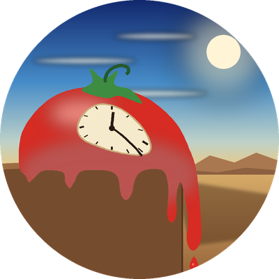
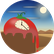
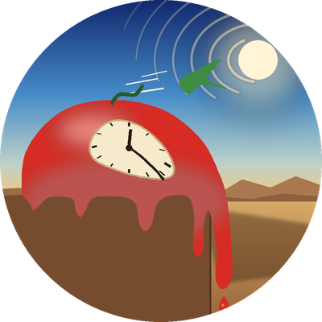
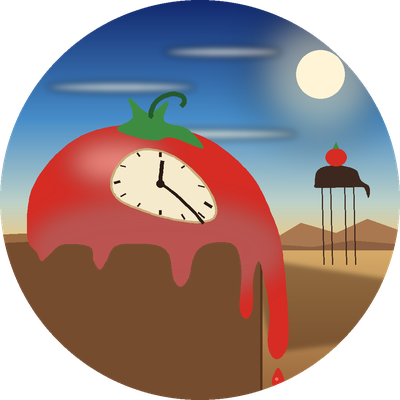
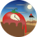

real sizeLong drips over the ledge, a falling drop, a warped clock with bent hands, wispy clouds, raking shadows.

Same melt under a swirling sky around the sun; the leaf is blown off with motion streaks.


real sizeThe melt plus a long-legged elephant carrying a tomato across the distant desert.